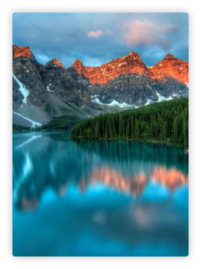

K2 Karakoram Range
K2, at 8,611 metres above sea level, is the second highest mountain in the world, after Mount Everest at 8,848 metres. It is located on the China–Pakistan border between Baltistan in the Gilgit-Baltistan region of northern Pakistan, and Dafdar Township in Taxkorgan Tajik Autonomous County of Xinjiang, China.
Explore More

